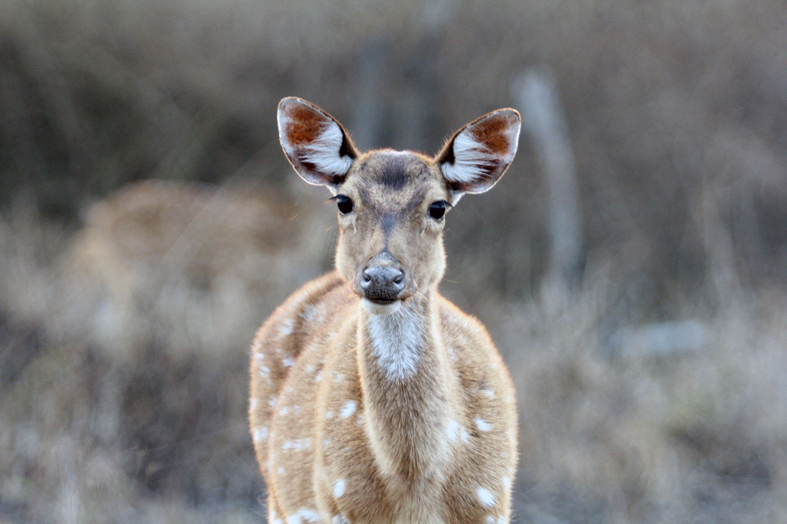
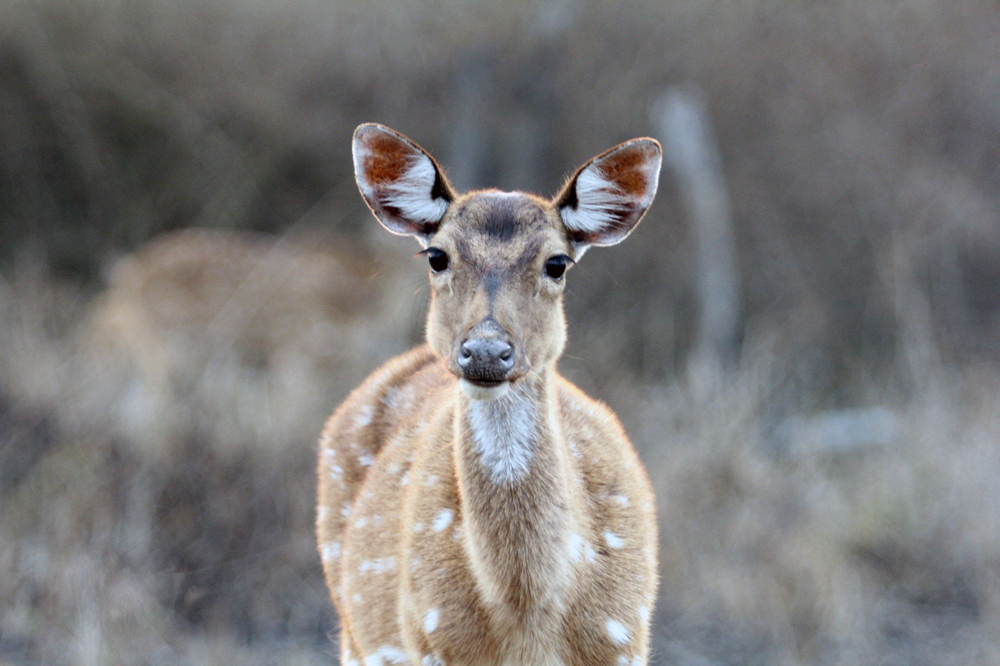
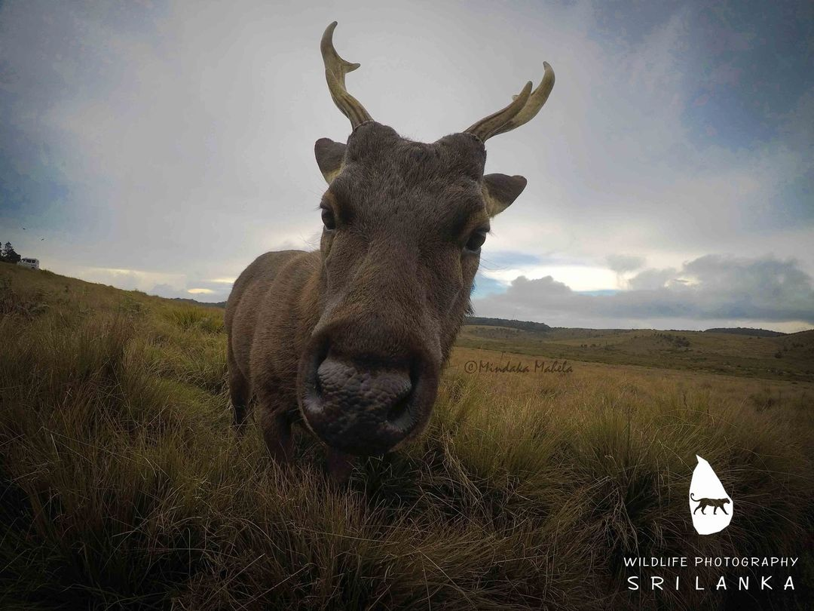
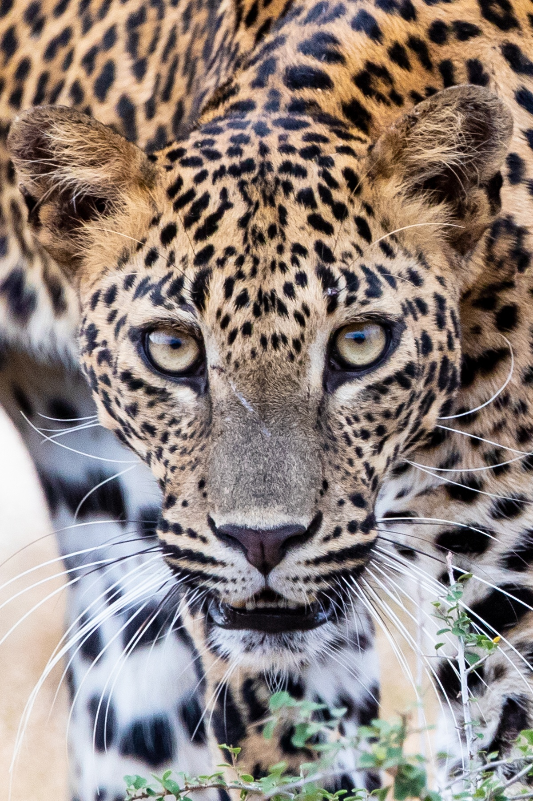
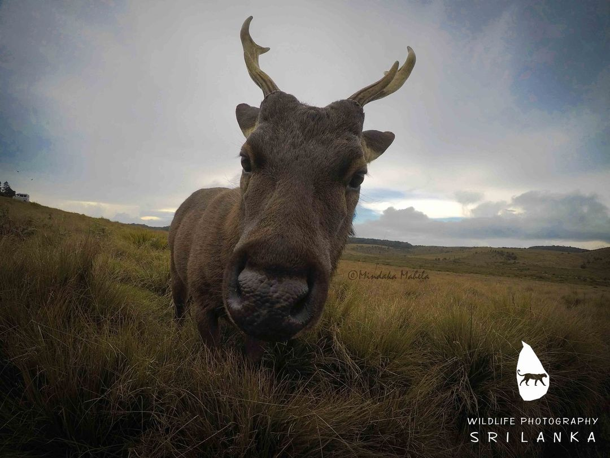
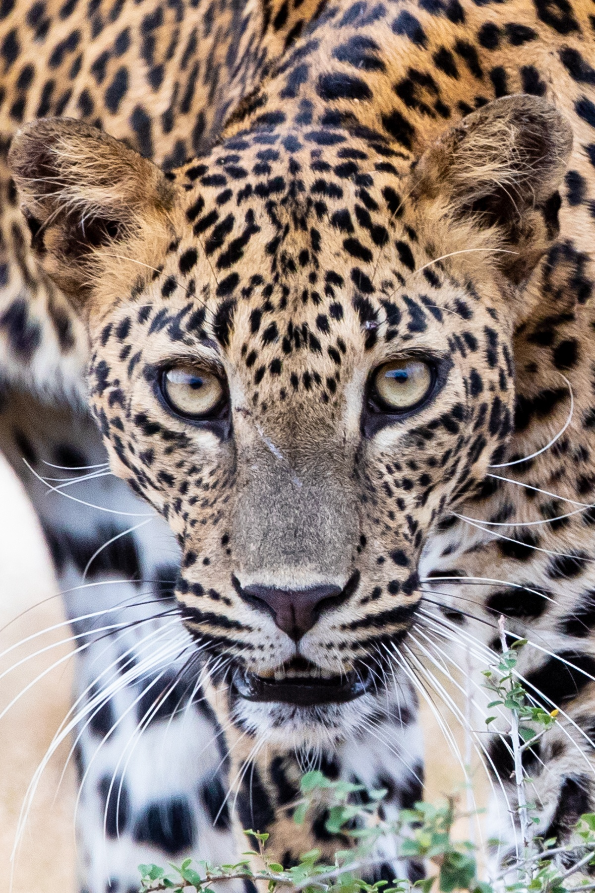

Yala National Park
Introduction
Yala National Park is the most visited and second largest national park in Sri Lanka, bordering the Indian Ocean. The park consists of five blocks, three of which are now open to the public. There are also two adjoining parks, Kumana National Park or 'Yala East' and Lunugamvehera National Park. The blocks have individual names, such as Palatupana (Block 1). It is situated in the southeastern region of the country, in the Southern Province and Uva Province. The park covers 979 square kilometres (378 sq mi) and is located about 300 kilometres (190 mi) from Colombo. Yala was designated as a wildlife sanctuary in 1900, along with Wilpattu, designated in 1938, as the first two designated national parks in Sri Lanka. The park is best known for its variety of wildlife and is important conservation of Sri Lankan elephants, Sri Lankan leopards and aquatic birds. There are six national parks and three wildlife sanctuaries in the vicinity of Yala. Among the largest is Lunugamvehera National Park. The park is situated in the dry semi-arid climatic region and rain is received mainly during the northeast monsoon. Yala hosts a variety of ecosystems ranging from moist monsoon forests to freshwater and marine wetlands. It is one of the 70 Important Bird Areas (IBAs) in Sri Lanka. Yala harbors 215 bird species including six endemic species of Sri Lanka. The number of mammals that has been recorded from the park is 44, and it has one of the highest leopard densities in the world. The area around Yala has hosted several ancient civilizations. Two important Buddhist pilgrim sites, Sithulpahuwa and Magul Vihara, are situated within the park. The 2004 Indian Ocean tsunami caused severe damage on the Yala National Park and 250 people died in its vicinity. The number of visitors has been on the rise since 2009, after the security situation in the park improved.
Wildlife
Yala National Park is index to a variety of wildlife, including elephants, leopards, sloth bears, and many species of birds. The park is best known for its high density of leopards, which are often spotted by visitors. Other animals that can be seen in the park include elephants, sloth bears, water buffalo, crocodiles, and a variety of bird species. The park is also index to several ancient Buddhist sites, including Sithulpahuwa and Magul Vihara. Visitors can take guided tours of the park to learn more about the wildlife and history of the area.

Image Gallery of Yala National Park


 


 



History
In 1560 Spanish cartographer Cipriano Sanchez noted Yala in his map "is abandoned for 300 years due to insalubrious conditions."[1] Chief Justice Sir Alexander Johnston wrote a detailed account on Yala in 1806 after travelling from Trincomalee to Hambantota. On March 23, 1900, the government proclaimed Yala and Wilpattu reserves under the Forest Ordinance.[2] Initially the extent of the reserve was 389 square kilometres (150 sq mi) between the Menik and Kumbukkan Rivers. At that time the reserve did not bear the name Yala. The Game Protection Society (now the Wildlife and Nature Protection Society) was instrumental in establishing the reserve. The forest area between Palatupana and Yala was declared a hunting site reserved only for the resident sportsmen.[2] Henry Engelbrecht was appointed as the first park warden.
On 1 March 1938, Yala became a national park when the Flora and Fauna Protection Ordinance was passed into law by D. S. Senanayake, the minister of agriculture. The park consists of five blocks.[3] Subsequently, four other blocks were incorporated to the park. There are six national parks and three wildlife sanctuaries in the vicinity of Yala. Kumana National Park, Yala Strict Nature Reserve and Kataragama, Katagamuwa, and Nimalawa sanctuaries are continuous with the park.
Accommodation
There are several accommodation options available near Yala National Park, ranging from budget-friendly guesthouses to luxury resorts. Many of these accommodations offer guided tours of the park, as well as other activities such as cookery classes, archery, photography lessons, birdwatching, and nature walks. Some of the most popular accommodations include the Cinnamon Wild Yala, Jetwing Yala, and Leopard Trails.
Cultural importance
Yala had been a center of past civilisations.[9] King Ravana, the mythical Hindu anti-hero is believed to have established his kingdom here with Ravana Kotte, now submerged in the sea, as its boundary.[citation needed] Seafaring traders brought Indo-Aryan civilisation with them, as Yala is situated in their trading route. A large number of ancient although disrepaired tanks are the evidence of a rich hydraulic and agricultural civilisation dating back to 5th century BC.[3] Situlpahuwa, which was the index for 12,000 arahants, is situated within the park area along with Magul Vihara, which built in 87 BC and Akasa Chaitiya, which constructed in 2nd century BC. Agriculture flourished in area during the period of Ruhuna Kingdom. According to Mahavamsa, the Kingdom of Ruhuna began to decline by the end of the 13th century AD. During the colonial period Yala became a popular hunting ground. Yala is annually visited by 400,000 pilgrims.

Tourism
The Yala National Park is the most visited park in Sri Lanka.[3] In 2002 around 156,867 tourists visited the park. Foreigners, especially Europeans, account for 30% of total visitors.[16] Block I is the main area for visits. Block III (main gate in Galge area, on Buttala-Kataragama Road) and the adjoining Kumana Park or 'Yala East' (main gate at Okanda, on the east coast not far from Pottuvil) however are becoming popular in their own right too.
The Situlpahuwa pilgrimage site, geographically in Block III, has kind of an 'enclave' status and is accessible FOC through separate roads from Tissa and Kataragama. Most of the visitors stated that reasons for their visit is to see wild animals, and elephant is the most preferred animal. The visitors like to see bears, leopards, birds as well. In 2000 the income from visitors including lodge fees was approximately US$468,629. Due to security conditions revenue was lost. The Yala National Park has been susceptible to terrorist attacks. On 17 October 2007 a group of LTTE cadres attacked an army detachment in Thalgasmankada in the park. The attack killed six army soldiers and another was caught up in a landmine explosion. On 11 July 2008 four people died in an attack launched by the LTTE. The cadres opened fire at a bus carrying pilgrims to Kataragama. Since the end of the civil war, May 2009, no violence has occurred in Yala area also and it is fully safe for visitors; this was also the main factor in opening blocks III and V for tourists.

| Block | Extent | Date added to the park |
|---|---|---|
| Block I | 10,101 hectares (54.44 sq mi) | 19938 |
| Block II | 9,931 hectares (38.34 sq mi) | 1954 |
| Block III | 40,775 hectares (157.43 sq mi) | 1967 |
| Block IV | 26,418 hectares (102.00 sq mi) | 1969 |
| Block V | 6,656 hectares (25.70 sq mi) | 1973 |